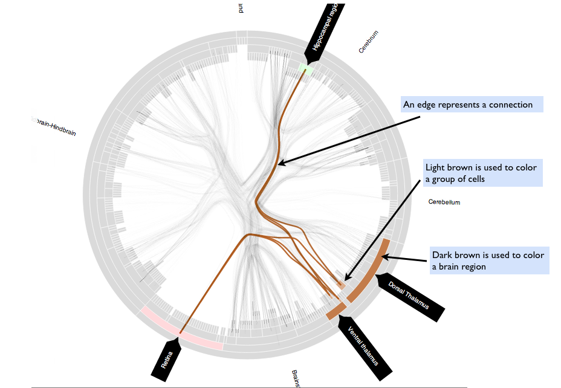

In this study, you will explore rat brain connectivity using the given application. There will be two tasks, where each will take approximately 30 minutes. In each task, you will be asked to find all the paths that involve one intermediate region between two given brain regions and collect a set of information about the paths. More instructions on which information to collect and how to collect them will be described in detail below.
While you are working on the two tasks, you will also need to complete some short secondary tasks. Each secondary task will involve reading and answering a message that pops up when you are working on the main tasks. Each message will contain a question about living in Brown and Providence, asked by an incoming Brown student. The messages may pop up any time while you are working on the two tasks. You will encounter approximately 4 - 5 messages during the study.
Note: the input panel allows you to read legends, customize the visualization, search the dataset and see help information. For the purpose of the study, you will only need to make use of the Search tab.
In the search result, you will see two types of intermediate nodes: regions and groups of cells. Regions are colored in dark brown and cells are colored in light brown (see the illustration below.
Connections are transferable: a connection between two groups of cells implies that the brain regions that contain those two groups of cells are connected. A connection between a group of cells that belong to region A and a group of cells that belong to region B is referred to as a sub-connection between A and B.
In the visualization, the layers of arcs represent the hierarchy, where the parent-children relationship between a brain region and a group of cells is indicated by finer division of angles.
We ask you to collect the following information about the paths returned as the search result:
1. Numbers of sub-connections between the source region and each intermediate region.
2. Numbers of sub-connections between each intermediate region and the target region.
3. Numbers of distinct references associated with each connection between two brain regions. To get this number, you need to sum up the number of distinct references for all the sub-connections between the two regions, excluding any repetition.
4. Citation counts for each of the literature associated with each connection. You do not need to read the paper, but you need to check the number of citations of each paper using Google Scholar and take that into account.
5. Number of distinct techniques used to examine each sub-connection.
6. The strength of each sub-connection reported by the associated literature. The strength can be either "weak", "moderate" or "heavy".
The above information will be available when you click on a connection in the visualization. You will need to type those information into a text editor by the end of each session. You could also use the text editor as a workspace to record any temporary information while you are working.
1. Report the most probable path that accounts for the communication between hippocampal region and anterior hypothalamic area.
2. Report the most probable path that accounts for the communication between striatam and dorsal thalamus.